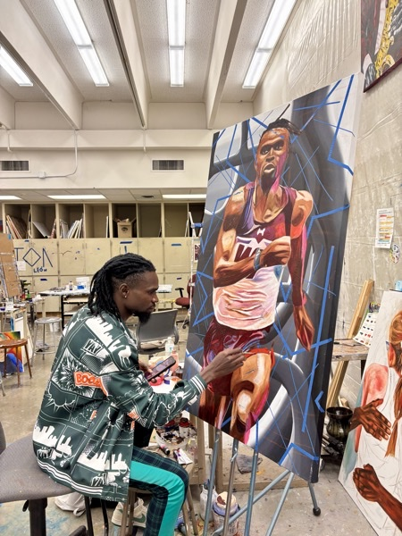
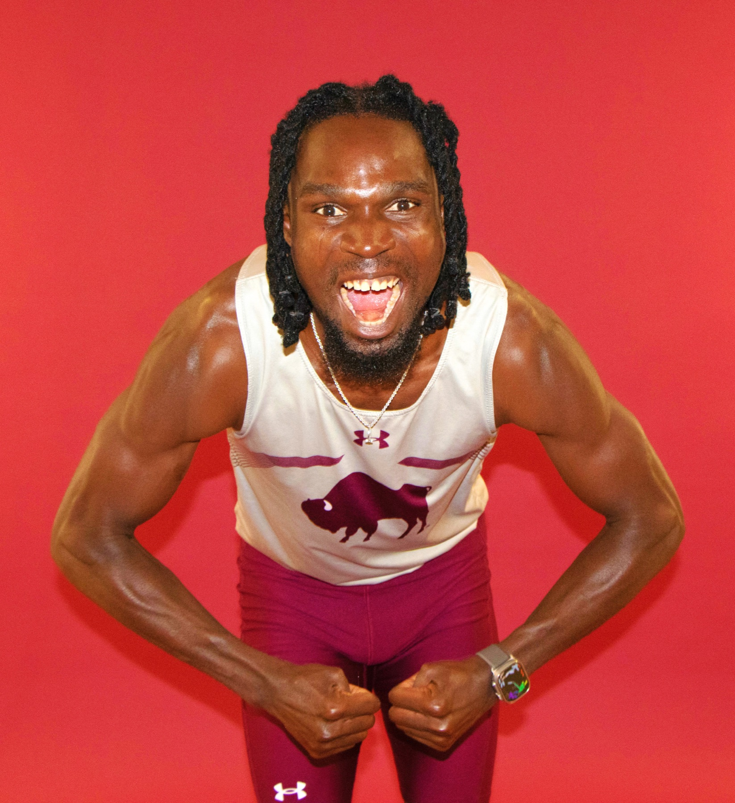

OREVA / JOSEPH OREVA
JOSEPH OREVA · NIGERIA
Art in vision.
Athlete in motion.
Joseph Oreva is a Nigerian visual artist specializing in painting
and a competitive long jumper. Exploring sport through image and movement.
01 / VISUAL ART↗

The art.
Painting, artist statement & solo exhibition
02 / LONG JUMP↗

The athlete.
National runner-up, All-American & WTAMU records
Selected recognition
ART & ATHLETICSA PERSONAL INTRODUCTION
Two ways to
make a mark.
Joseph Oreva brings the perspective of a painter and a competitive athlete to his work. His painting explores overlooked moments in sports, where realism and abstraction offer space for vulnerability and resilience.
From his solo BFA exhibition, Oreva, to NCAA Division II outdoor national runner-up finishes in 2024 and 2025, this portfolio connects his creative practice with his long-jump career.